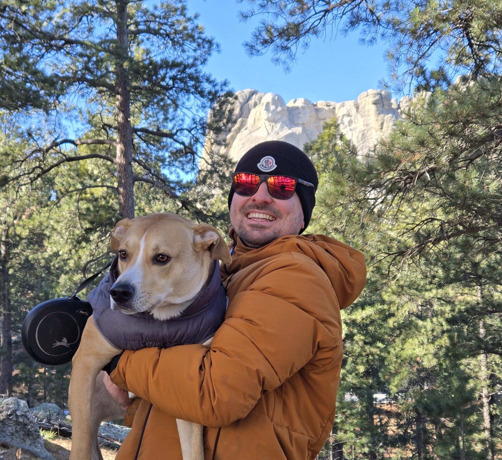

Greater Seattle Area, WA
Halil I. Helvaci
Applied Scientist at Amazon with a Ph.D. in Electrical & Computer Engineering. I build ML systems across vision, language, and structured data, from research prototypes to production pipelines serving billions of records.
About
Five-plus years building machine learning systems spanning computer vision, NLP, and structured data. My research centers on temporal modeling, teaching models to find precise structure in continuous signals, whether that's segmenting fine-grained actions in rehabilitation video or ranking risk across production logistics data at scale. I'm experienced end-to-end: from novel model architectures to deployed pipelines on AWS.

With Bulut at Mount Rushmore.
Core competencies
- Transformers
- Temporal Modeling
- Computer Vision
- Active Learning
- Multi-modal Learning
- LLMs
- Generative Models
Tools
- Python
- PyTorch
- AWS (SageMaker, Bedrock, EC2, S3)
- Docker
- Git
- Linux
- SQL
Experience
- Implemented the Signal Expansion Automation Kit (SEAK), reducing Applied Scientist time spent on market expansion by 50–60% across high-scale production signals.
- Expanded Amazon's Speed production signals to worldwide markets (UK, EU, CA) to enable sub-same-day shipping globally.
- Developed Multi Membership Temporal Attention (MMTA), an attention operator tackling the temporal granularity bottleneck in action segmentation, reaching state-of-the-art Edit Scores of 71.1% (StrokeRehab) and 88.4% (50Salads).
- Introduced a boundary-centric active learning framework (B-ACT), with 99.5% reduced annotation costs via uncertainty-guided clip selection targeting ambiguous action transitions on GTEA, Breakfast, and 50Salads.
- Developed HRTR, a single-stage transformer for sub-second action segmentation, improving prior benchmarks by up to 3.3%.
- Delivered TRP-Apple, an end-to-end ML framework preventing first-mile theft by ranking high-risk SKUs and vulnerable routes, enabling ~60% faster mitigation and ~50% less manual review.
- Built a two-stage ranking system (Gradient Boosting + RoBERTa) reaching 94%/93% precision/recall on existing inventory, 82%/85% on cold-start products, 93%/93% on route risk, with a 65% reduction in false positives.
- Automated ground-truth labeling via AWS Bedrock (Nova Lite), removing annotation bottlenecks and enabling scalable training across 5M+ records.
- Developed a conditional GAN framework for class-balanced synthetic data generation, improving defect detection rate by 12% over the production baseline in e-beam wafer inspection.
- Automated defect classification workflows via a MySQL database integration, eliminating manual data entry from the training pipeline.
- Developed a semi-supervised image retrieval model for defect root-cause analysis, reaching 98% top-1 accuracy identifying morphologically similar defects across classification boundaries.
- Accelerated training pipeline throughput by 30% via a generator-based data loader on 4TB+ semiconductor image datasets.
- Mentored 300+ undergraduate students across cybersecurity, electric circuits, and senior capstone design courses through office hours, grading, and project coaching.
Education
Ph.D., Electrical & Computer Engineering
University of Kentucky · Jan 2020 – Aug 2026
B.S., Electrical Engineering, Minor in Mathematics
University of Kentucky · Aug 2013 – May 2017
Research highlights
MMTA: Multi Membership Temporal Attention
An attention operator designed to tackle the temporal granularity bottleneck in fine-grained action segmentation, applied to stroke rehabilitation assessment.
B-ACT: Boundary-Centric Active Learning
An uncertainty-guided active learning framework targeting ambiguous action transitions, cutting annotation costs by 99.5% on temporal segmentation benchmarks.
HRTR: Single-Stage Transformer for Sub-Second Segmentation
A single-stage transformer architecture for fine-grained, sub-second action segmentation in stroke rehabilitation video.
Selected publications
- 01 Halil I. Helvaci, Justin P. Huber, Jihye Bae, S-C. Cheung
- 02 Halil I. Helvaci, S-C. Cheung
- 03 Halil I. Helvaci, Justin P. Huber, Jihye Bae, S-C. Cheung
- 04 Halil I. Helvaci, S-C. Cheung, C-N. Chuah, S. Ozonoff
- 05 S. Liaqat, Halil I. Helvaci, Dongjie Chen, Chongruo Wu, Sally Ozonoff, Chen-Nee Chuah, S-C. Cheung
Full publication list on Google Scholar.
Awards & achievements
- 2025 Best PhD Poster AwardUniversity of Kentucky ECE Spring Research Symposium
- 2019 Vodafone Leaders of the Future Program (Europe)Selected as 1 of 23 candidates from 70,000+ applicants
- 2013–17 International Student Ambassador ScholarshipUniversity of Kentucky
- 2013–17 William C. Parker Diversity ScholarshipUniversity of Kentucky